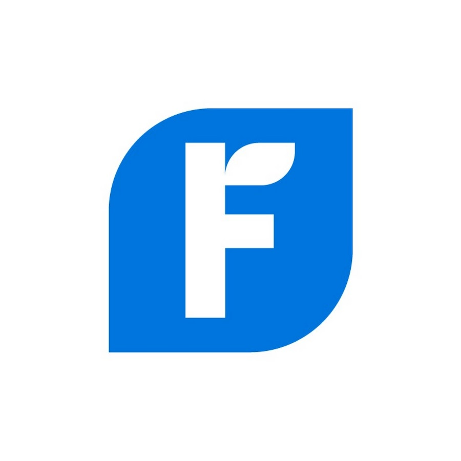
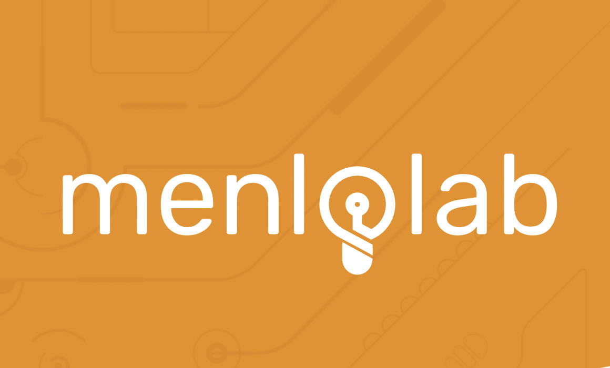
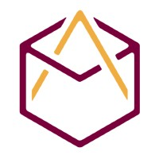
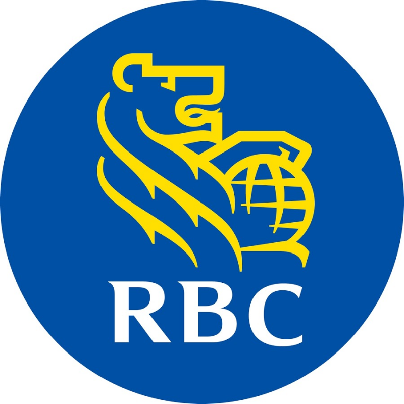

about.

I have always been drawn to tech and curious about how things are built. We had one shared PC growing up in my family. When I was first introduced to emails and online messaging, it felt like magic. It drew me in, making me question things and wanting to learn more. Today, as new technology is being developed and showcased at a much faster rate, I still find myself feeling excited and inspired.
Throughout the years, I have worked with a wide variety of frameworks and tools which has helped me quickly learn and adapt to new technology. Outside of programming, I love escape rooms, travelling, and thinking that I'm a great photographer when I take pictures of the food I eat. Keep scrolling to learn more about my professional and personal experiences!


experience.

 FreshBooks
Software Engineering Intern
May 2022 - Aug 2022
I worked on the Product Development team and had the opportunity to work on an upcoming feature release. My mentor (FreshBuddy) quickly helped me ... Read more
 So fast, so furious
So fast, so furious MenloLab
Software Developer Intern
May 2021 - Dec 2021
My first startup experience. We had a small but close development team, and communicated majority of our daily updates through standup.
I started my term with a couple light tickets such as adding skeleton loaders, updating outdated packages and adding simple components in Vue.js
...
Read more

 MARS Apprentice
Season 17 Apprentice - Winner
May 2021 - Nov 2021
MARS Apprenctice is an experiential learning case competition offered to business and management students at McMaster. We worked closely with five different companies to solve five different problems ... Read more
 RBC
Technical Systems Analyst
Dec 2019 - Aug 2020
First internship. This was my first experience working at company outside of McMaster. Technical responsiblilities aside, I felt like I had so many new things to navigate. Learning about company culture, working on teams with people with vastly different experiences and background, and then the pandemic had hit ... Read more
projects.

englism
A dictionary and thesaurus web application with the Merriam-Webster API.

vCity
An application that utilizes voice API to assist users in touring Hamilton while driving
minimo (open source)
An elegant, simplified new tab page replacement for Google Chrome. Added searching and opening custom shortcuts using your voice.
connect.
hello world. 
I'm always open to having chats about tech, food and travelling.
Or anything you might want to chat about!
Countries/Cities visited (not including Canada):
Dominican Republic, Iceland, Boston, Florida, Hong Kong, Vietnam, China
You can connect with me through one of the options below: